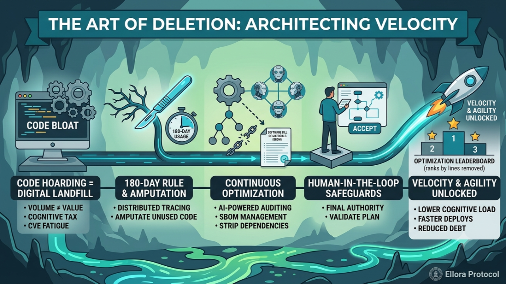
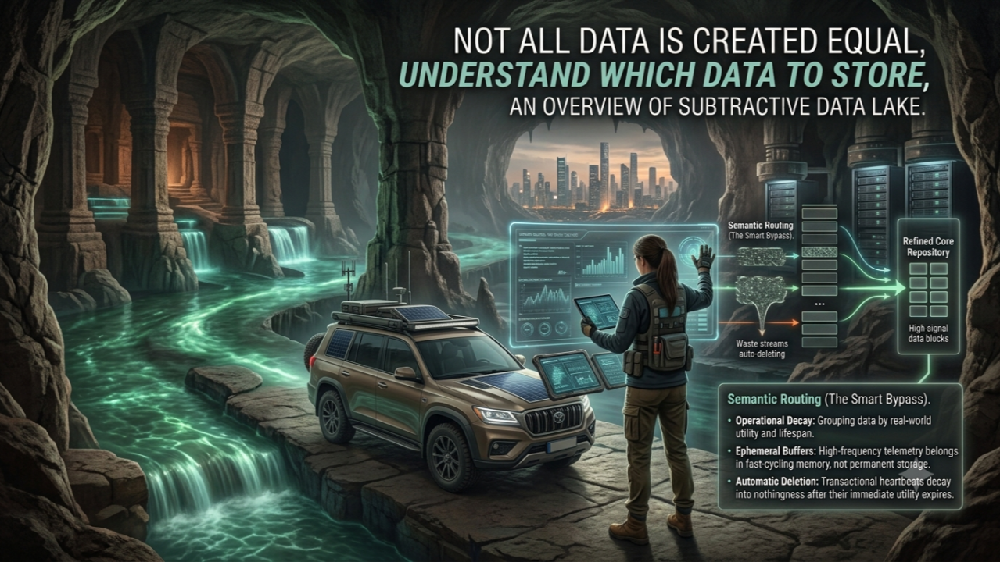
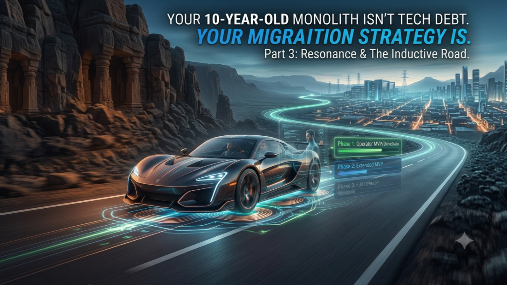
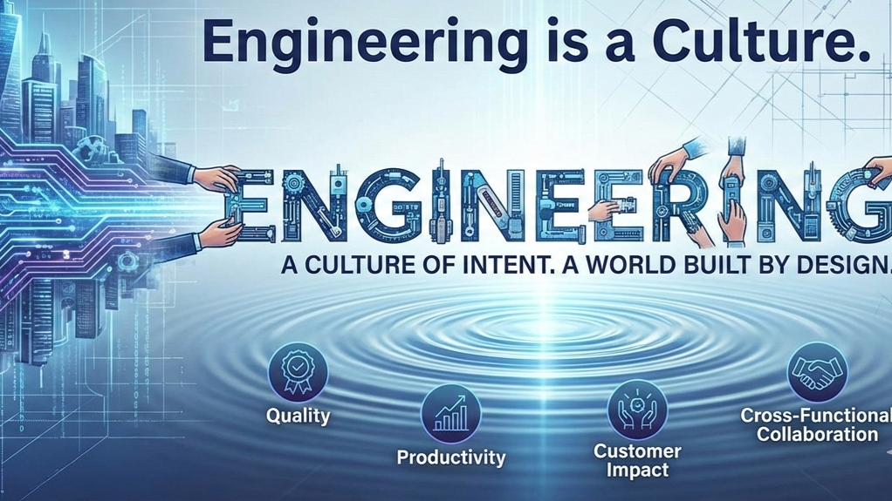

The Art of Deletion: Why Your Best Engineers Should Measure Success by Lines Removed, Not Written
Where Subtraction matters more than addition — a story of Subtractive Runtimes
Exploring the convergence of computer vision, physical AI, and edge robotics to enable autonomous perception and real-time decision-making in industrial environments.
Investigating quantitative methods to measure, control, and prevent software bloat in systems generated or assisted by AI models.
Formulating architectural frameworks that emphasize reducing unnecessary dependencies, optimizing memory utilization, and maximizing component lifetime.



